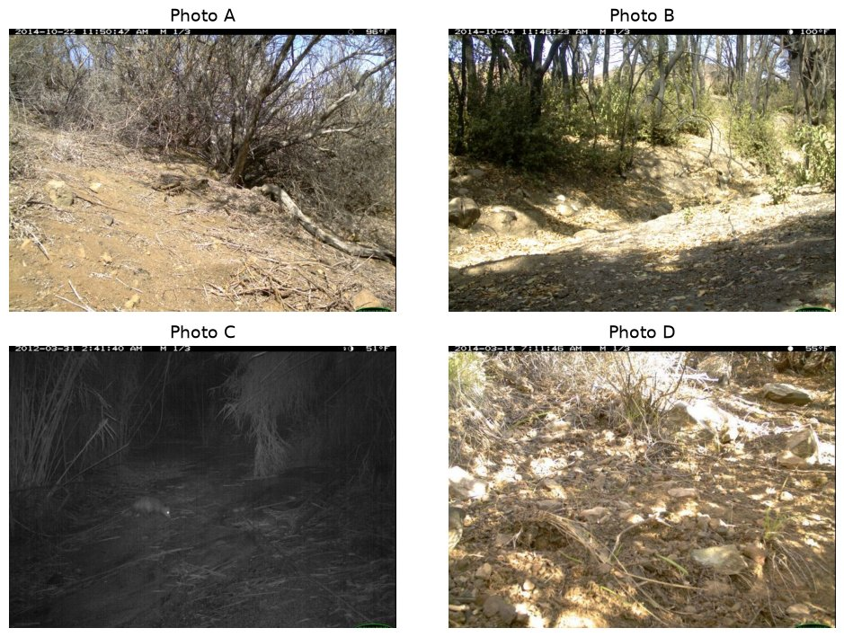
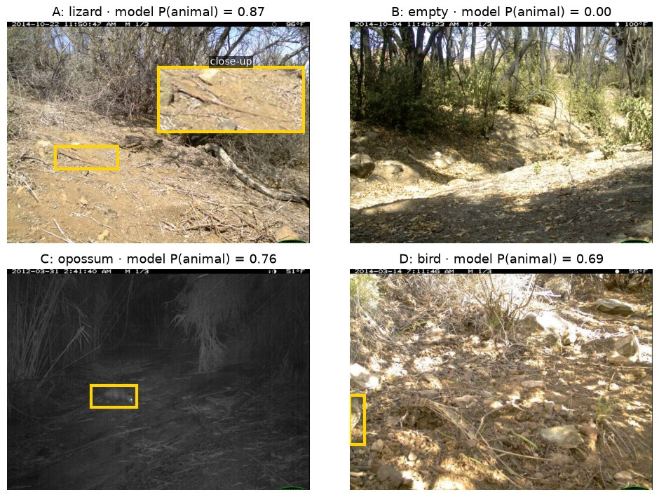
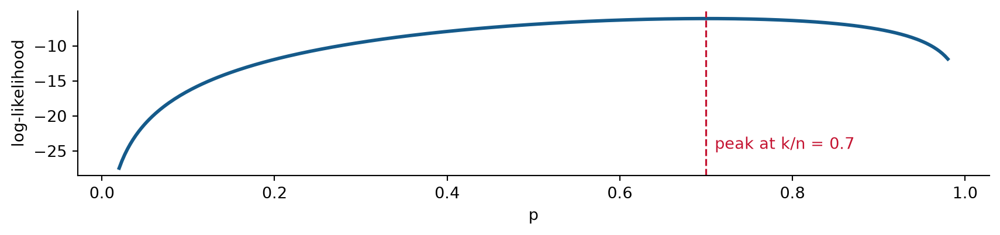
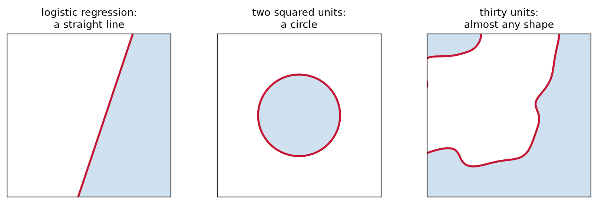

Week 1A · Use statistics for AI and AI for statistics
Shannon Gallagher
Use statistics for AI and AI for statistics
That is this course in one line. Each half is a question.
Statistics for AI. Someone says an AI system works. How would we know?
AI for statistics. An AI tool did part of our analysis. How do we know it is right?
What do you think?
How do you use AI for data work?
Raise your hand if you have used an AI tool to
write or fix code in Python, R, or SQL;
clean or reshape a dataset;
pick a statistical method or model;
explain output you did not understand;
write up results;
do homework you were supposed to do yourself (no hands needed).
Good use or bad use?
Name a way to use AI for data work. Is it a good use, a bad use, or does it depend?
What the good uses have in common
You can check the output. The code runs, the test passes, or you know what a right answer looks like.
A mistake is cheap to catch before it matters.
You still make the calls that need judgment: which question, which data, and what the result means.
The bad uses hand over the judgment and leave no way to check.
That is the AI for statistics half of this course. Use AI where you can check it, and learn how to check it.
A claim to check: a sepsis alarm
Sepsis is the body’s extreme response to an infection. At least 1 in 5 adults who develop it die in the hospital or are discharged to hospice. Finding and treating it early is linked to lower mortality.
Epic, a major medical-records company, sells a model that scores each hospital patient’s risk of sepsis and alerts the staff. Hundreds of US hospitals use it. Epic and a partner health system reported an AUC between 0.76 and 0.83.
Your hospital is deciding whether to turn the alerts on. What would you want to know first?
AUC is the chance the model gives a random patient with sepsis a higher score than a random patient without it. 0.5 is a coin flip, and 1 is perfect. Sources: CDC, “About Sepsis” (cdc.gov/sepsis); Wong et al. (2021), JAMA Internal Medicine 181(8):1065–1070; Habib, Lin, and Grant (2021), JAMA Internal Medicine 181(8):1040–1041.
What an independent check found
Michigan Medicine ran the model on 38,455 hospitalizations, and 7% had sepsis. Counting only scores made before sepsis began,
the AUC was 0.63 (95% CI 0.62 to 0.64);
it missed two-thirds of the patients who had sepsis;
it alerted on 18% of all patients, and only about 1 alert in 8 was sepsis.
Counting scores from up to 3 hours after sepsis began raised the AUC to 0.80. An alarm that fires once sepsis is obvious looks accurate and helps no one.
The model is a penalized logistic regression, the model we start with today.
Wong et al. (2021), “External validation of a widely implemented proprietary sepsis prediction model in hospitalized patients,” JAMA Internal Medicine 181(8):1065–1070 (corrected version).
The two halves are one skill
Both halves ask the same question: how do you know it is right?
Statistics for AI
AI for statistics
What we check
a claim about an AI system
work an AI tool did for us
Example
“AUC between 0.76 and 0.83”
AI-written code that cleans our data
What we ask
Which population? Measured how? How precise?
Does it run? Is it right? Can I explain it?
The course has two goals that match. You will learn to evaluate claims about AI systems, and to use AI tools well without handing over your statistical judgment.
Every analysis has five stages
Stage
The sepsis alarm
1. Define the question, hypotheses, and estimands
Will the alarm catch sepsis earlier for our patients?
2. Explore the data and assess its quality
Whose patients was it built on? How is sepsis recorded, and when?
3. Model the data, make inferences, and evaluate performance
Cases caught, false alarms, and AUC, with uncertainty
4. Test how sensitive the conclusions are
Does it hold with another definition of sepsis, or at another hospital?
5. Make a decision and state its limitations
Turn the alerts on? For which units?
Every homework and the final project follow these five stages.
How the course runs
Tuesday. A statistical problem and worked examples.
Thursday. A shorter lecture, then a lab in Google Colab. The homework starts where the lab leaves off.
Checkpoint. A short online quiz on the week’s lectures opens after Thursday’s class. It takes 20 minutes, you may use your notes, and AI is not allowed. Your two lowest scores are dropped.
Homework, due Tuesdays. Problem 1 is by hand without AI. Problem 2 is a data analysis. Problem 3 asks you to use AI, then check and fix what it produced.
After spring break, the course turns to a team project, and one class a week becomes a project work session.
Grades
Component
Weight
Homework (seven, lowest dropped)
15%
Weekly checkpoints (ten, lowest two dropped)
20%
Midterm, in class Thursday, March 4
25%
Final project, including peer assessment
40%
Homework is where you practice, with AI where it is allowed. Checkpoints, the midterm, and the project’s oral defense are where you show the reasoning is your own.
The final project
After spring break, you work in a team of four as a research team for a client. The client has an AI system, some data, and a decision to make. Your team studies whether the AI system is good enough for that decision.
Track
The client’s question
Food tagging
Should a marketplace tag food photos automatically?
Pet tagging
Can the system tag breeds, or only cats versus dogs?
Human preferences
Does an LLM judge measure what people prefer?
Instruction following
Can an LLM judge check whether responses follow instructions?
You build it in steps: two milestones along the way, then a short video with slides and a conversation with me about your work.
AI in this course
Allowed, and sometimes required, on homework Problems 2 and 3 and on the project. Each assignment says how.
Not allowed on homework Problem 1, checkpoints, or the midterm. Turn off the Colab assistant and autocomplete too.
Always keep an AI-use record: the tool, your first prompt, what you checked, and what you changed.
You are responsible for every number, sentence, and line of code you turn in. Be ready to explain any of it without the tool.
“The AI said so” is never statistical evidence.
Our first AI system: sorting camera-trap photos
Wildlife biologists put motion-triggered cameras along trails. Each time something moves, a camera takes a burst of three photos.
Most photos are empty. Wind moved a branch, or the light changed. Someone has to look through all of them.
A team is considering an AI model, MegaDetector, to sort the photos. Photos it calls empty may never be looked at.
Before trusting the model, the team wants to know how often it is right on photos like theirs.
Animal or empty?

Vote on each photo: animal or empty?
The answers

The model got all four right, but it was more sure about some than others. A probability is not yet a decision: the team still has to pick a cutoff.
Yellow boxes show where MegaDetector found each animal (LILA BC’s published MegaDetector v5a results).
A model you know: logistic regression
Let Y_i = 1 if photo i has an animal, and let x_i be features of the photo, such as brightness.
a probability, p = \sigma(\beta_0 + x^T\beta) = 1/\{1+e^{-(\beta_0 + x^T\beta)}\};
a decision, made by comparing p with a cutoff c.
Odds and log-odds
The odds of an animal are p/(1-p), the chance of an animal divided by the chance of none. If p = 0.7, the odds are 0.7/0.3 = 2.33: about 7 animal photos for every 3 empty ones.
The log-odds are \operatorname{logit}(p) = \log\{p/(1-p)\}. Logistic regression is a straight line on this scale: \operatorname{logit}(p) = \beta_0 + x^T\beta.
How a statistician reads a coefficient. Adding 1 to x_j adds \beta_j to the log-odds, which multiplies the odds by e^{\beta_j}. If the coefficient on a night indicator is 0.69, night photos have e^{0.69} \approx 2 times the odds of showing an animal.
What ML calls it. The log-odds are the logits. A network’s last layer outputs logits, then applies the sigmoid. Same quantity, different name, and usually nobody interprets it.
Fitting it: maximum likelihood
With no features, every photo has the same p. If k of n photos have an animal,
L(p) = p^k(1-p)^{n-k}, \qquad \ell(p) = k\log p + (n-k)\log(1-p).

For 7 of 10, the peak is at \hat p = 0.7. In HW1 you show the peak is always at k/n. Because \beta_0 = \operatorname{logit}(p), the intercept estimate is \hat\beta_0 = \operatorname{logit}(0.7) = 0.85.
If k = 0 or k = n, the peak sits at p = 0 or 1, and the intercept estimate runs off to −∞ or +∞.
Drawing the boundary
Predict 1 when \hat p(x) \ge c, which is the same as \beta_0 + x^T\beta \ge \operatorname{logit}(c).
For \sigma(-0.6 + 1.5x_1 - 0.5x_2) at c = 0.5, the boundary is x_2 = 3x_1 - 1.2.
Test a point. At (1,0), -0.6 + 1.5 = 0.9 > 0, so below the line is class 1.
Changing c moves the line, not the probabilities.
Check: move the cutoff
A fitted logistic regression is \hat p(x) = \sigma(2 - x_1 - 2x_2).
At c = 0.5, find the boundary.
Which side is classified as 1?
Classify (0,0), (2,0), and (0,2).
Raise the cutoff to c = \sigma(1) \approx 0.73. Where does the line go?
At c \approx 0.73 the boundary is 2 - x_1 - 2x_2 = 1, or x_2 = (1 - x_1)/2: the same slope, shifted down. Fewer points are called 1, and the fitted probabilities do not change.
Add a hidden layer: a neural network
Logistic regression on transformed features, such as x_1^2 and x_2^2, is still logistic regression. You choose the transformations.
Add a hidden layer that learns them, and you have a neural network. One hidden layer with two units:
Each hidden unit takes a linear combination of the inputs and passes it through a function g, the activation. Common choices are \max(0, z) and the sigmoid. The output uses the sigmoid, as in logistic regression.
A hidden layer by hand
Activation: squaring, g(z) = z^2.
Unit 1:w_{10} = 0, w_1 = (1, 0), so h_1 = (0 + 1\cdot x_1 + 0\cdot x_2)^2 = x_1^2.
Boundary at c = 0.5.\sigma(0) = 0.5 and \sigma only increases, so \sigma(z) \ge 0.5 exactly when z \ge 0: \hat p(x) \ge 0.5 \iff 1 - x_1^2 - x_2^2 \ge 0 \iff x_1^2 + x_2^2 \le 1, \text{ inside the circle.}
Weights chosen by hand; training learns them from data. Logistic regression on x₁ and x₂ alone cannot draw a circle.
Side by side: add a hidden layer
Logistic regression
Neural network
Linear predictor
\beta_0 + x^T\beta
\alpha_0 + \sum_j \alpha_j h_j(x)
Output
\sigma(\text{linear predictor})
\sigma(\text{linear predictor})
How it is fit
maximize the Bernoulli likelihood
minimize binary cross-entropy
Decision boundary
a straight line
can curve
Standard errors
printed by summary()
exist, but software rarely computes them
Interpretation
each coefficient has a meaning
individual weights are hard to read
With no hidden layer, the network is logistic regression: same model, and binary cross-entropy is the negative log-likelihood. In HW1 you show this.
“Same” can mean two things. Same model: the same set of functions. Same fit: the same estimates. A penalty or early stopping changes the fit without changing the model.
write down a model for how the data were generated
find whatever predicts best
How it is judged
interpret parameters and check assumptions
test predictions on held-out cases
Today’s example
logistic regression
the one-hidden-layer network
The line is about how a model is used, at least popularly. We just saw that the network is fit by the same likelihood as logistic regression.
We do not pick a team. We hold predictions to statistical standards: which population, how measured, how precise, and compared with what.
Where the flexibility comes from
Logistic regression always draws a straight line. In a network, the hidden units h_j(x) = g(w_{j0} + x^Tw_j) are learned. With other activations and more units, the h_j can be a very broad class of functions, and the boundary can take almost any shape.

Shaded regions are classified 1. That flexibility is the appeal: a network can fit patterns a line misses. It is also the risk.
More flexible is not automatically better
Fit the model to a random training set D and get \hat p_D(x) at a fixed x. For a new response Y,
Bias= \mathbb E[\hat p_D(x)\mid x] - p(x): how far the average fit is from the truth.
Variance= \operatorname{Var}\{\hat p_D(x)\mid x\}: how much the fit changes from one training set to another.
More hidden units and a broader class of h usually lower the bias and raise the variance. Which wins depends on the data. In HW1 you derive this identity.
Worked example: lower bias can still lose
At one x, suppose p(x) = 0.40. The noise term is 0.40 \times 0.60 = 0.24.
Procedure
Average fitted probability
Variance
Expected squared error
Logistic regression
0.35
0.010
0.24 + 0.05^2 + 0.010 = 0.2525
Flexible network
0.39
0.018
0.24 + 0.01^2 + 0.018 = 0.2581
The network has less bias, but logistic regression has lower expected error here, because its variance is smaller.
Check: which procedure wins?
At one x, p(x) = 0.50. Procedure A averages 0.45 with variance 0.010. Procedure B averages 0.49 with variance 0.016.
Compute the expected squared error for each.
Which has less bias? Which has lower expected error?
Why keep a simple baseline?
A simple model earns its place even when it predicts worse.
Inference. Its coefficients have meanings and standard errors. We can state a hypothesis about how things work, such as “photos taken at night are more likely to show an animal,” test it, and say how sure we are.
A reference point. A logistic regression on brightness, color, and edges shows how much those simple features already explain, and whether the AI adds anything beyond them.
A shortcut check. A flexible model can latch onto things that will not hold up, such as one camera’s background, near-copies of the same burst in training and test data, or how the labels were made. If the simple model does just as well, ask why.
It does not need to win to be useful.
Thursday
First, how statistics and ML fit these models, and where each one stops. Then the lab:
look at the photos and their bursts;
fit the logistic regression baseline;
compare it with MegaDetector on cameras the models have not seen.
Read before Thursday: Breiman, “Statistical Modeling: The Two Cultures”, pp. 199–208, plus one discussant. Come with one thing the prediction culture got right.